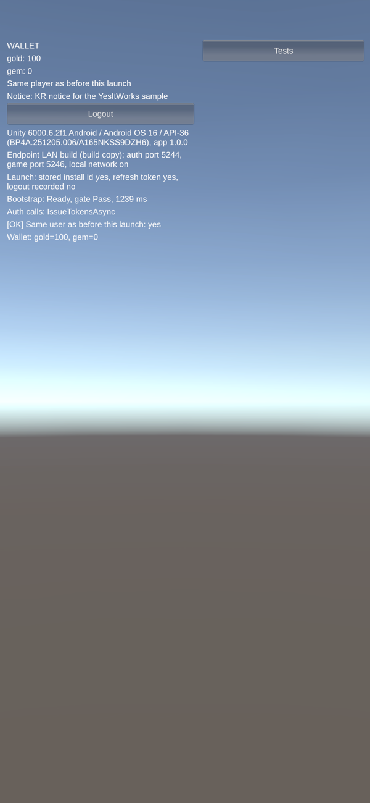
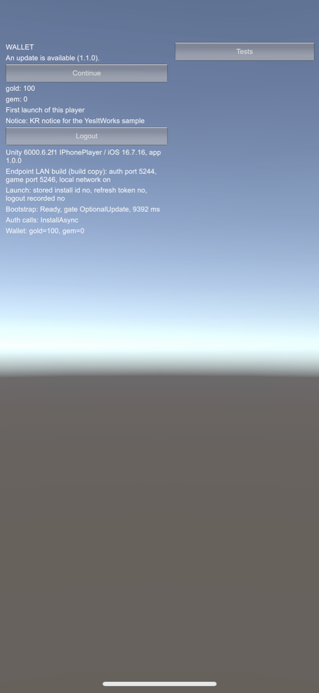
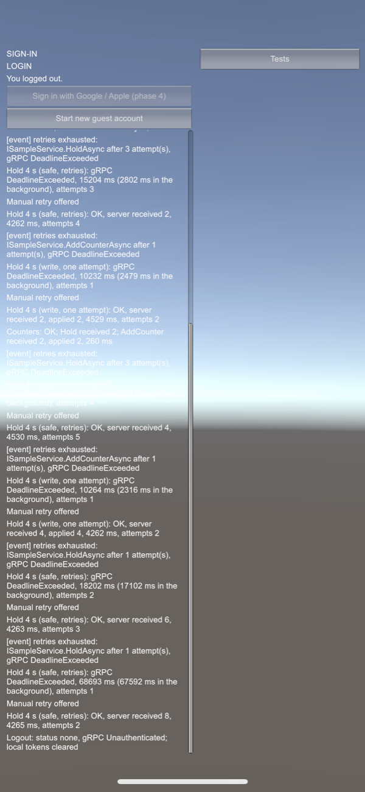
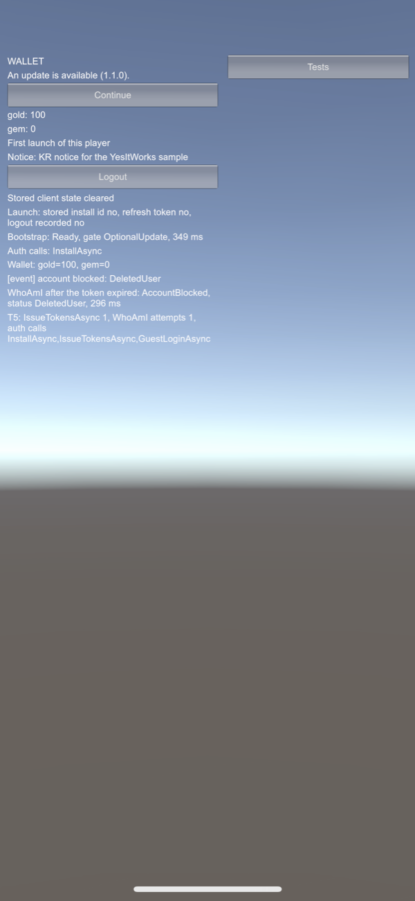

작업 목표
지난 작업에서 새 저장소의 뼈대를 만들고 인증 서버를 옮겼다. 이번에는 그 위에 앱 실행부터 게임 입장까지 이어지는 첫 흐름을 올렸다. 게임 개발에서 흔히 “수직 슬라이스”라고 부르는, 처음부터 끝까지 한 번에 이어지는 얇은 기능 묶음이다. 출시한 게임 「흰둥이는 퐁퐁퐁」의 코드에서 검증된 부분만 골라 새로 만들고, 실제 Android와 iPhone에서 끝까지 동작시키는 것이 완료 기준이었다.
작업 결과
서버 두 개와 Unity 클라이언트에 걸친 작업을 다섯 번에 나눠 병합했다. Android는 명령줄 스크립트로 앱을 자동 조작해 68개 확인 항목을 모두 통과했고, iPhone X는 Xcode에서 실행해 사람이 직접 조작하며 14가지 상황을 모두 통과했다.


강제 종료, 비행기 모드, Wi-Fi 끊김, 권한 창, 토큰 만료, 로그아웃, 계정 삭제 등을 두 기기에서 확인했다.
.NET 테스트 435개와 Unity 에디터 테스트 65개가 모두 통과했다.
첫 실행에서 60/61이었고, 실패한 항목을 고친 뒤 모두 통과했다.
다섯 가지 중 세 가지를 고쳐 다시 확인했고, 두 가지는 다음 단계 설계로 넘겼다.
로그인부터 지갑까지, 다섯 번에 나눠 만들었다
한 번에 만들지 않고 다섯 번에 나눴다. 매번 계획 → 검토 → 구현 → 보고 → 병합 순서로 끝냈고, 다음 작업이 알아야 할 내용은 저장소의 설계 문서에 남겼다.
점검 · 업데이트 확인
로그인하기 전에 서버 점검 중인지, 강제 업데이트가 필요한지 먼저 확인한다.
게스트 로그인
처음이면 게스트 계정을 만들고, 다시 켰다면 저장된 로그인 정보로 이어서 시작한다.
게임 입장
처음 입장할 때 프로필과 지갑을 만들고, 원격 설정에 정한 초기 재화를 지급한다.
재화 지갑
서버가 정한 순서대로 재화를 보여 준다.
원격 설정 서버
Server게임 서버의 데이터베이스 기반을 만들고, 기존 게임의 원격 설정 기능을 옮겼다. 점검 시간대, 강제 업데이트 기준 버전, 설정마다 누구에게 보여 줄지를 새로 설계했다.
플레이어 프로필과 재화 지갑
Server처음 게임에 들어올 때 프로필과 지갑을 만든다. 같은 계정으로 첫 요청 16개가 동시에 와도 프로필은 하나만 생기고, 삭제된 프로필은 다시 만들지 않는다.
Unity와 분리한 네트워크 코어
Client토큰 갱신, 재시도, 앱 시작 절차를 Unity에 의존하지 않는 코드로 분리했다. 그래서 기기 없이도 가짜 서버로 이 규칙들을 반복 테스트하고, 실제 서버를 띄운 CI 점검에서도 같은 상황을 돌릴 수 있다.
Unity 연결 계층과 IL2CPP 빌드 검사
Unity기기 저장소(PlayerPrefs), 메인 스레드 처리, 기기의 국가 설정 읽기를 붙였다. 빌드할 때 쓰지 않는 코드를 가장 강하게 지우는 설정(High)에서도 필요한 코드가 남아 있는지 빌드 결과물을 검사하는 스크립트를 만들었다.
샘플 앱과 실기기 테스트 도구
Device점검 화면, 로그인 화면, 지갑 화면을 가진 샘플 앱과 테스트 버튼을 만들었다. 서버가 일부러 응답을 늦추는 요청 같은 테스트용 장치는 샘플에만 두고, 실제 게임이 쓰는 플랫폼 코드에는 넣지 않았다.
코드를 쓰기 전에 설계부터 고쳤다
매번 Claude Code가 먼저 계획을 내고, 별도의 대화에서 검토해 고친 뒤 승인했다. 구현한 뒤에 고친 것보다 계획 단계에서 바꾼 것이 훨씬 많았다.
점검 시간대를 따로 뺐다
앱 버전과 점검 설정은 조건에 가장 잘 맞는 한 줄을 통째로 쓴다. 그래서 플랫폼별 설정이 생기면 전체 대상으로 켠 점검이 iOS에는 적용되지 않는 구조였다. 점검은 별도의 시간대 목록으로 나눴다.
강제 업데이트는 최소 지원 버전으로
“강제 업데이트 여부” 표시와 버전 범위 조건 대신 “이 버전 미만은 업데이트 필요”라는 기준 하나로 바꿨다. 플랫폼마다 한 줄이면 되고, 조건끼리 우선순위가 꼬여 강제 업데이트가 빠지는 일이 없다.
서버만 쓰는 설정 값
설정을 “누구나”와 “로그인한 사용자”로만 나누면, 초기 지급량처럼 서버만 쓰는 값도 모든 사용자에게 내려간다. 서버 전용 범위를 추가했다.
DB가 멈춰도 응답은 멈추지 않게
설정은 백그라운드에서 주기적으로 다시 읽고, 요청에는 마지막으로 읽어 둔 값으로 바로 답한다. DB 장애 테스트에서도 점검 확인 요청은 모두 0.5초 안에 끝났다.
한 번의 시도 기한과 전체 기한
요청의 제한 시간이 하나뿐이면, 응답 없이 멈춘 첫 시도가 시간을 다 써서 다시 시도할 여유가 없다. 한 번의 시도는 5초, 재시도를 포함한 전체는 15초로 나눴다.
저장은 디스크에 쓰는 것까지
모바일에서 강제 종료된 앱은 PlayerPrefs에 적은 값을 디스크에 쓰지 못할 수 있다. 기기 식별값은 설치 요청을 보내기 전에 반드시 디스크에 쓰게 했다.
자동 테스트가 다 통과한 뒤에도, 실기기는 다섯 가지를 찾아냈다
Android는 USB로 연결한 Galaxy A16에서 스크립트가 앱을 설치하고, 버튼을 누르고, 강제 종료와 비행기 모드까지 자동으로 조작했다. iPhone X는 Xcode에서 실행하고 사람이 단계마다 직접 조작했다. 단계마다 기대 결과와 함께 “다르게 나오면 무엇을 뜻하는지”를 먼저 적어 두고 시작했다.
권한 창을 천천히 누르면 첫 요청이 실패했다
수정 완료iOS는 같은 Wi-Fi의 개발 서버에 처음 접속할 때 로컬 네트워크 권한 창을 띄우고, 창이 떠 있는 동안의 요청은 실패한다. 앱은 창이 닫히기를 기다렸다가 한 번 더 보내는데, 기다리는 시간이 2초뿐이었다. 창을 읽고 누르는 사이에 그 재시도까지 실패했다. 기다리는 시간을 10초로 늘리되, 앱이 화면으로 돌아오면 바로 보내게 했다.
- 0.02~1.2초 첫 요청(점검 확인)이 3번 실패했다. 권한 창 때문에 연결이 막혔다.
- 1.3초 권한 창이 뜨며 앱이 화면 뒤로 밀렸다.
- 8.77초 허용을 누르자 기다리던 재시도가 바로 나가 성공했다.
- 9.4초 로그인과 게임 입장까지 끝났다. 재시도 버튼은 뜨지 않았다.
일부러 다섯까지 세고 허용을 누른 테스트다. 기다리는 시간이 2초였다면 재시도는 약 3.2초에, 권한 창이 떠 있는 채로 나가 실패했을 것이다.
게임 도중 삭제된 계정에 아무 메시지가 없었다
수정 완료계정이 삭제된 뒤 로그인 토큰을 갱신하면 서버는 “사용자 없음”(UserNotFound)으로 답한다. 앱은 이 답을 일시적인 실패로 보고 요청만 실패시켰다. 사용자는 다음에 앱을 켤 때까지 이유 없는 실패만 보게 된다. 이 답을 되돌릴 수 없는 실패로 바꾸자, 곧바로 이어지는 게스트 로그인이 “삭제된 계정”이라고 답했고, 앱은 그 자리에서 계정 차단 이벤트를 받았다. 실패한 요청을 다시 보내지도 않았다. 샘플 앱은 이 이벤트를 화면 로그로 보여 주고, 실제 게임은 이 이벤트를 받아 안내 화면을 띄우면 된다. 수정 전에는 앱을 다시 켜야 비로소 삭제 안내가 떴다. 서버가 “사용자 없음”으로 답하는 방식은 기존 게임에서 그대로 가져온 것이라, 계정 삭제 기능을 만드는 다음 단계에서 함께 정하기로 했다.
토큰이 만료된 뒤 로그아웃하면 서버에 로그인이 남았다
수정 완료로그아웃 요청은 15분짜리 접속 토큰으로 인증했는데, 로그아웃할 때는 일부러 토큰을 새로 받지 않게 설계했다. 그래서 접속 토큰이 만료된 뒤의 로그아웃은 서버에 닿지 못했고, 기기에서만 로그인 정보가 지워졌다. 추정으로 끝내지 않고, 토큰이 만료되는 시각을 기다렸다가 같은 상황을 재현했다.
Logout: none, gRPC Unauthenticated; local tokens cleared이제 로그아웃은 요청에 담긴 장기 토큰(리프레시 토큰)으로 인증한다. 그 토큰을 가진 쪽은 이미 로그인을 이어 갈 수 있으니, 로그아웃할 권한을 주는 것은 새로운 권한이 아니다. 기기 백업에 남은 토큰으로 로그인이 되살아날 위험도 함께 막았다.
서버는 저장했는데 앱은 실패로 봤다
다음 단계로서버가 4초 동안 응답을 늦추는 저장 요청 도중에 비행기 모드를 켰다. 저장 요청은 자동으로 다시 보내지 않게 되어 있어서 한 번만 나갔지만, 그 요청은 끊기기 직전에 서버에 도착해 저장됐다. 사용자가 다시 누르면 두 번 저장된다. Android와 iPhone 모두 같았다. 같은 요청이 두 번 적용되지 않도록 요청마다 고유 ID를 붙이는 설계를 다음 단계로 넘겼다.
iOS는 백그라운드로 가면 응답을 잃었다
다음 단계로요청 도중 홈 화면으로 나갔다가 돌아오는 테스트에서, Android는 백그라운드에서 요청을 끝냈지만 iPhone은 매번 수동 재시도로 끝났다. 서버는 요청을 처리했지만, iOS가 앱을 일시 정지시키는 사이 응답이 사라졌다. 조회처럼 다시 보내도 안전한 요청은 앱이 돌아왔을 때 한 번 더 자동으로 보내는 방안을 다음 단계로 넘겼다.


검증하면서 알게 된 것
문제가 아니었던 결과에서도 배운 것이 많았다.
재시도 4회는 규칙 위반이 아니었다
재시도는 최대 3회인데 4회가 찍혔다. 서버 로그를 보니 테스트 도중 15분짜리 접속 토큰이 자연스럽게 만료된 것이었다. 토큰 때문에 거절된 1번과 재시도 규칙 안의 3번이라 규칙은 지켜졌고, 두 가지를 따로 보여 주게 고쳤다.
앱이 서버 버그를 찾았다
앱의 네트워크 코어는 응답의 성공 여부 값을 엄격하게 확인한다. 그 덕에 앞서 만든 원격 설정 서버가 성공 대신 기본값을 돌려주고 있던 결함이 드러났다. 서버 테스트가 이 값을 보지 않아 놓친 것이다.
모든 커밋이 테스트를 통과해야 했다
마지막 커밋만 검증했더니 중간 커밋 하나가 테스트에 실패했다. 올리기 전에 커밋 순서를 정리했고, 그 뒤로는 커밋마다 빌드와 테스트를 확인한다.
CI 실패는 로그부터 봤다
CI 점검이 한 번 실패했지만 코드 문제가 아니었다. 컨테이너 이미지 저장소의 일시 장애(503)였고, 원인을 확인한 뒤에 다시 실행했다. 원인을 모른 채 다시 돌리면 진짜 문제도 가려진다.
Unity 빌드가 설정 파일을 바꿨다
새로 받은 저장소에서 테스트만 돌리면 URP 설정 파일의 한 목록이 비워지고, 앱을 빌드하면 되돌아왔다. Unity에 알려진 문제라서, 이 차이는 되돌리고 커밋하지 않는 규칙을 만들었다.
작업 세션은 짧게, 결정은 문서에
AI 에이전트의 작업 세션이 길어지면 앞의 대화를 요약하는 과정에서 세부가 빠지고 비용도 커졌다. 작업마다 새 세션으로 시작하고, 결정과 다음 작업이 알아야 할 내용은 저장소 문서에 남겨 이어받게 했다.
계획은 사람이 고치고, 실행은 AI 에이전트가
지난 단계처럼 설계 대화와 실행을 나눴다. 이번에는 작업마다 Claude Code가 계획을 먼저 내고, 별도의 대화에서 검토해 고친 뒤 승인했다. 구현, 테스트, 빌드, Android 조작은 Claude Code가 하고, 코드 올리기와 병합, iPhone 조작, 결정은 사람이 했다.
AI 에이전트가 맡은 일
- 작업별 계획 초안과 구현
- 커밋마다 빌드와 테스트, 마지막 커밋의 전체 검증
- Android · iOS 빌드와 빌드 결과물 검사
- Galaxy A16 자동 테스트와 서버 로그 · DB 대조
- 설계 결정과 테스트 증거 정리
사람이 직접 한 일
- 계획 검토와 20개의 설계 결정
- 코드 올리기, PR 생성과 병합
- iPhone X를 Xcode에서 실행하고 테스트 단계 수행
- 권한 허용, 비행기 모드, Wi-Fi 끄기, 앱 강제 종료 같은 기기 조작
- 민감한 기록 확인과 결론 전달
- 스크린샷 정리
자동 테스트는 출발선이었다
자동 테스트 500개가 모두 통과한 상태에서 기기 테스트를 시작했다. 하지만 권한 창을 누르는 속도, 토큰이 만료되는 시각, iOS의 앱 일시 정지처럼 실제 기기와 실제 시간에서만 생기는 조건이 문제를 드러냈다.
이번 단계의 진행 순서
작업별 계획
↓
설계 검토와 승인
↓
구현과 자동 테스트 (커밋마다)
↓
Android 자동 실행 · iPhone 수동 테스트
↓
기기에서 찾은 문제 수정
↓
고친 빌드로 기기에서 다시 확인기기 테스트를 마지막에 한 번 하는 확인 절차가 아니라, 고친 뒤 다시 돌리는 반복으로 다뤘다.
무엇을 왜 바꿨는지 이유와 날짜를 함께 기록했다. 다음 작업은 이 기록을 이어받아 시작한다.
3줄 요약
- 앱 실행 → 점검 · 업데이트 확인 → 게스트 로그인 → 게임 입장 → 재화 지갑까지의 흐름을 서버와 Unity 클라이언트에 걸쳐 만들었다.
- 강제 종료, 비행기 모드, 권한 창, 토큰 만료 등 14가지 상황을 Android와 iPhone 실기기에서 테스트해 문제 다섯 가지를 찾았고, 세 가지를 고쳐 다시 확인했다.
- 계획은 사람이 검토해 고치고 실행은 AI 에이전트가 맡았다. 기대 결과를 먼저 적어 둔 것이 낯선 결과의 원인을 빠르게 찾는 열쇠였다.
다음 작업
출시 필수 기능
Phase 4계정 삭제, 게임마다 따로 쓰는 Firebase 프로젝트로 하는 소셜 로그인, 원격 설정을 파일로 관리하고 서버에 바로 반영하는 도구, 운영 로그와 서버 상태 점검, 개발 · 운영 서버 환경을 붙인다.
이번에 넘긴 문제
Phase 4같은 저장 요청이 두 번 적용되지 않게 하는 요청 ID, iOS에서 앱이 돌아왔을 때의 자동 재시도, 삭제된 계정에 대한 서버 응답, 기기 안의 로그인 정보 보안 저장을 정한다. 소셜 계정 테스트와, 인터넷에서 접속할 수 있는 서버로 Wi-Fi → 모바일 데이터 전환 테스트도 다시 돌린다.
결제
Phase 5영수증 검증과 중복 지급 방지를 붙인다.